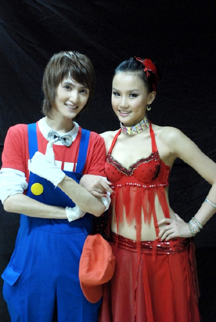
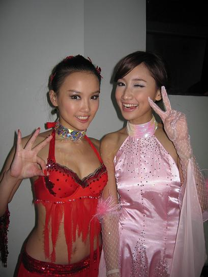
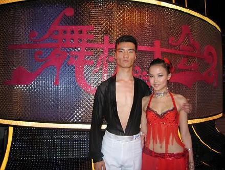
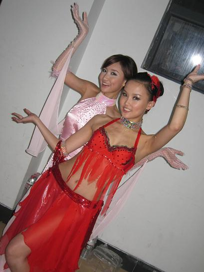
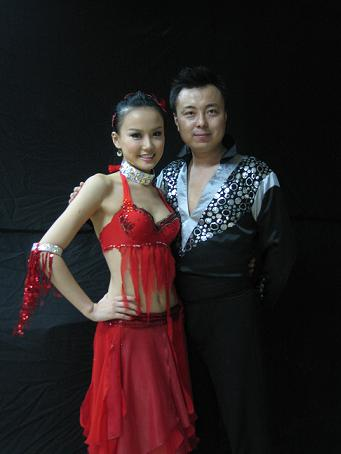
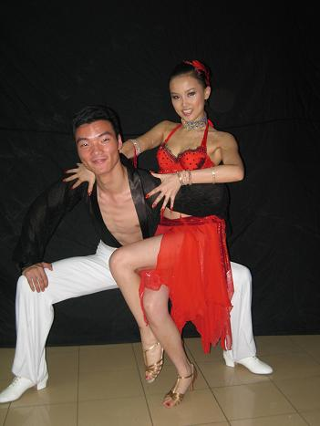

又拿了第一
2008-08-04 01:51
昨天晚上看了自己在舞林大会复赛上的表现，虽然获得第一。自评两个字，惭愧。。。这次选择跳SAMBA难度非常高，向鼎说他的体质有点弱，其实我才是真正的弱呢，评委老师建议我每天至少要跳三四个小时的舞蹈，原来平时的一点点健身对于拉丁来说是远远不够的，惭愧惭愧。
这次还是6名选手参加PK，通过抽签的方式分成3组PK，巧是真巧，跟向鼎真的蛮有缘分的，排练的时候，他就要求要和我分在同一场，在抽签的时候，当我抽到蓝色球我就预感向鼎同学一定也会抽到蓝球，果然我感觉很准啊，他真的抽到了蓝色，向鼎初赛也是跳SAMBA，真是不PK也不行啊。哈哈！不过我们是友谊PK，虽然我赢了，但是我觉得很惭愧，因为其实没有练的很多，所以跳得并不好。反而向鼎是很努力的，他在舞蹈房练习的时候真的很认真，他当时身体不舒服，每天都要打点滴。看到他在舞台上跳的那么认真，让我很感动也很惭愧。





← 返回全部文章索引